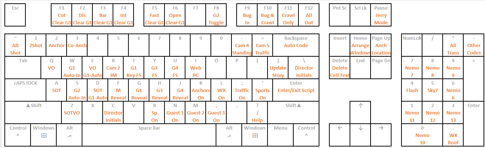

Task: Convert a closed interface drag-and-drop workflow into keystrokes.
Daily newscast production has time-consuming data-entry component. Each Overdrive production element (Camera, Tape, Weather, Sound, etc...) must be dragged individually into a script. Overdrive the automation system that controls video, camera, audio, and graphics. Many aspects of the production are handled by Overdrive which generates a playlist of actions that controls the entirety of a newscast production.
Drag and drop is an intuitive workflow, however it is time consuming. Especially, when nearly every story in the show will require production elements. Improving data entry speed has big payoffs in overall production efficiency. Reducing input time by a few seconds over 50+ elements, adds up.
These codes are used to generate an automation playlist that controls all aspects of a newscast production. This includes video, audio, graphics, camera controls, graphics, video sources.
For Example these codes do:
The content management system (Dalet) is a closed system. Codes created within the system only exist within the CMS. They cannot be dragged into another program like Notepad. However, these objects also exist on an external website which can be dragged into either the CMS or another program like Notepad++. Which reveals these codes are comprised entirely of XML.
For Example these codes do:
Using macros are built using a custom Autohotkey script. A Library of XML codes are saved in an autohotkey library under variable names. Each key is assigned a macro which uses the clipboard to paste XML directly into the CMS. This turns a drag and drop procedure, into keystrokes. The KGO macro library is complex enough to require its own layout guide.
In addition there are multiple quality of life improvements:
Most keys are hard assigned to a single purpose-built task (Camera, Sound, Mic etc..). There is a single key, that automatically codes based on rundown information. It is difficult to interface with the CMS directly. The macros are limited to the user interface. Pressing the autocode initiates a sequence that moves the cursor to the first row of the rundown. Then presses TAB to get to the format field, which is copied to the clipboard, TAB is pressed to then to the Anchor Read Column, which is copied to the clipboard, then TAB is pressed again to get to the Stage Notes column, which is copied to the clipboard.
Based upon the fields: Format, Anchor Name, and Stage the code uses a hard coded decision tree to select the correct code.
Autohotkey doesn’t recognize anchor initials per se. It code needs to know if initials are associated with the talent sitting at the Anchor1 or Anchor2 position. Autohotkey generates a menu for the user to enter their initials (to mark their completed work) along with talent initials.
A single button solution does take a few extra seconds to run compared to a purpose-built command, however it’s use isn’t limited to the keyboard. This allows edge cases (time consuming and rarely used) to be added to the single button logic. It also cuts down on the cognitive load or having to remember all the key combinations.
If the CMS had a decent API the coding process could be dramatically improved using similar logic. Converting drag-and-drop to keystrokes has reduced daily data entry times by 20%.